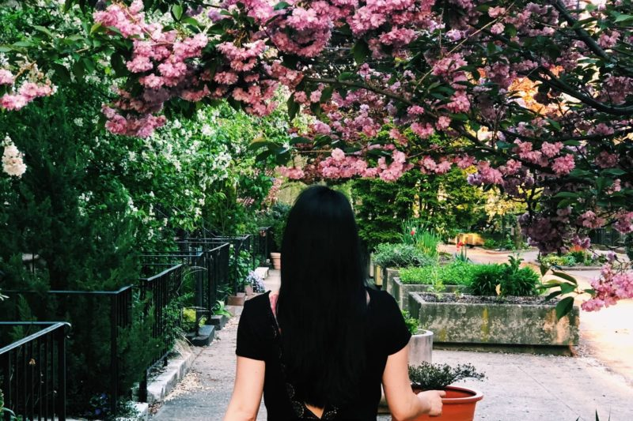
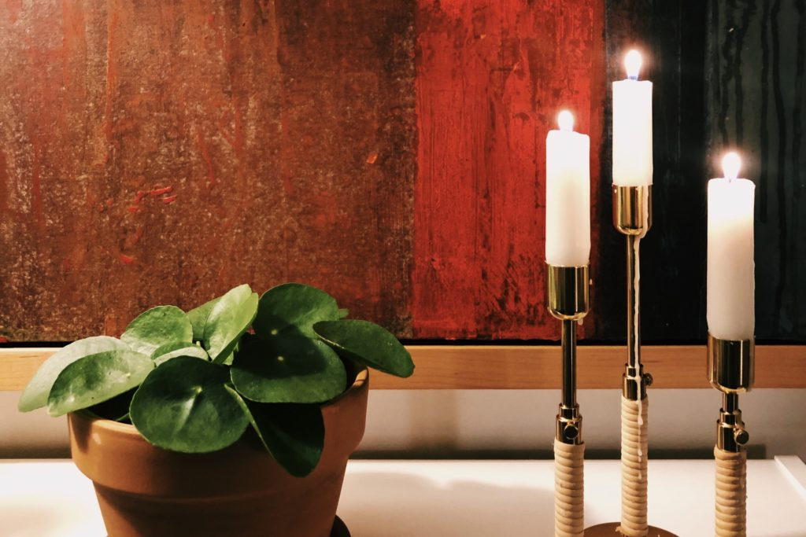
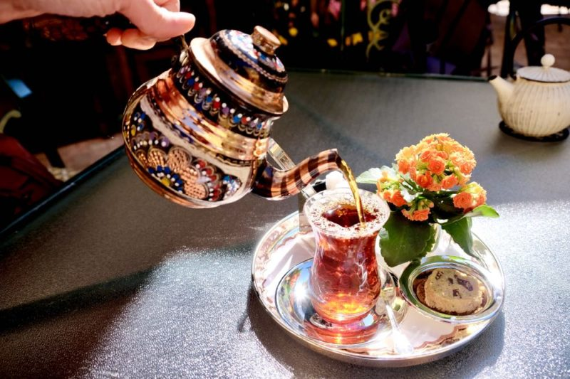
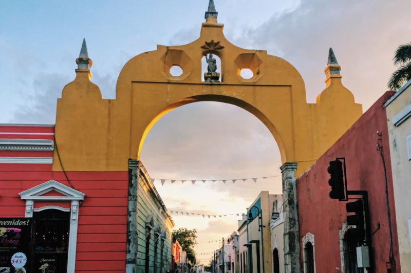
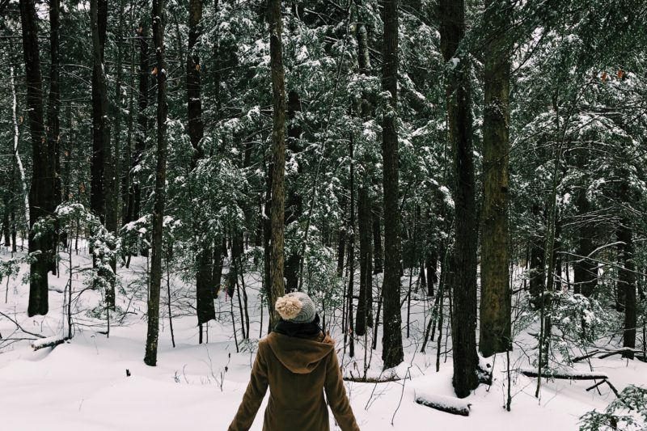

PURSUING A DREAM WHEN NO ONE CAN SHOW YOU HOW
One of my personal heroes, Jacqueline Novogratz, launched her second book this week. As the founder and CEO of Acumen, Novogratz is extraordinary for her achievements; but what has always taken my breath away is her vibrant, honest storytelling. When I was beginning to explore a career change a few years ago, I picked up…
Continue Reading

February 23, 2020 | 3 comments
SIMPLE MORNING AND EVENING ROUTINES DURING QUARANTINE
Prior to the coronavirus outbreak, our lives seemed to be moving at breakneck speed. I, especially, had abandoned any past commitment to slow living when I realized that I could do so much more with my time if I just… crammed it all in. I’m embarrassed and humbled to confess that I have unnecessarily worked…
Continue Reading

March 12, 2020 | 2 comments
CORONAVIRUS SURVIVAL: ONE BREATH AT A TIME.
Our current global crisis has catalyzed numerous reactions, from individuals like you and me shuttered away in our homes, to large multinational organizations working to respond in time. Amidst all the advocacy, commentary, and reporting (and much of this is important), it would be nearly impossible to resist overwhelm. As we consider the various layers…
Continue Reading

March 24, 2020 | 7 comments
TRAVEL GUIDE TO MÉRIDA, MEXICO: HISTORY, ART, AND SWIMMING IN CENOTES
If you’re looking for a special, off-the-beaten-path destination in Mexico, then Mérida in the Yucatán might be it. With a beautiful historic town, stunning local art, unique cuisine, and magical caves for swimming, Mérida makes the perfect quiet getaway. You’ll be able to balance cultural exploration with lots of natural scenery, all in an area…
Continue Reading

April 4, 2020 |3 comments
HELLO 2020: WHERE WE’VE BEEN AND WHERE WE’RE GOING
As I look back over 2019, I feel a rush of emotions. The highest highs and lowest lows met us this year, across 4 continents, over multiple months. Some of the travel was for our nonprofit that works with communities in Latin America. Other travel was for family, friends, or simply getting away to experience…
Continue Reading

April 10, 2020 | 5 comments